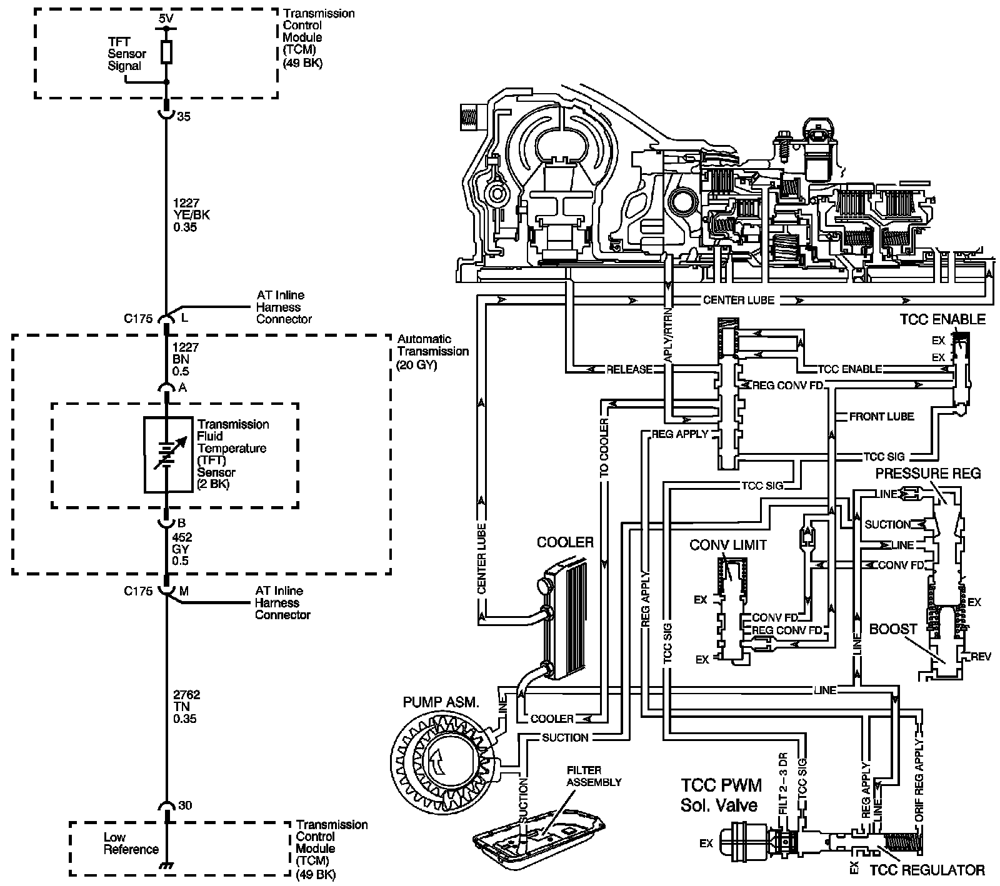

4L80-E / 4L85-E Automatic Transmission
DTC P0218

Circuit Description
The flow of transmission fluid starts in the transmission pan. It is then drawn through the filter and transmission case into the oil pump assembly. The oil pump assembly pressurizes the fluid, line pressure, which becomes the main supply line of fluid. This fluid is directed to various components and hydraulic circuits within the transmission. The pressure regulator valve receives this fluid and directs it to the converter clutch shift valve. The converter clutch shift valve directs hot fluid leaving the torque converter or regulated converter feed fluid, through the cooler line to the transmission oil cooler. The transmission oil cooler is located in the radiator. The vehicle may also be equipped with an auxiliary oil cooler. The cooled fluid, center lube, is returned to the transmission through the return cooler line and into center lube port of the transmission. The automatic transmission fluid temperature (TFT) sensor, senses the fluid temperature in the transmission pan.
If the transmission control module (TCM) detects a high TFT for a long period of time, then DTC P0218 sets. DTC P0218 is a type C DTC.
DTC Descriptor
This diagnostic procedure supports the following DTC:
DTC P0218 Transmission Condition Overtemperature
Conditions for Running the DTC
^ The system voltage is 8-18 volts.
^ The TFT is between -39° C (-38° F) and 149° C (300° F) for 5 seconds or greater.
Conditions for Setting the DTC
The TFT is greater than 130° C (266° F) for 600 seconds (10 minutes) or greater.
Action Taken When the DTC Sets
^ The TCM does not request the engine control module (ECM) to illuminate the malfunction indicator lamp (MIL).
^ The TCM freezes transmission adaptive functions.
^ The TCM records the operating conditions when the Conditions for Setting the DTC are met. The TCM stores this information as Failure Records.
^ The TCM stores DTC P0218 in TCM history.
Conditions for Clearing the DTC
^ A scan tool can clear the DTC.
^ The TCM clears the DTC from TCM history if the vehicle completes 40 warm-up cycles without a non-emission related diagnostic fault occurring.
^ The TCM cancels the DTC default actions when the fault no longer exists and the DTC passes.
^ The TFT sensor is 129° C (265° F) or less for 5 seconds or greater.
Diagnostic Aids
^ Verify the customer driving habits, such as trailer towing, etc.
^ The scan tool TFT should rise steadily during warm-up cycles then stabilize.
^ DTC P0218 may set approximately 600 seconds (10 minutes) after DTC P0711 has set. Follow the diagnostic table for DTC P0711 before proceeding to the diagnostic table for DTC P0218. Repairing the condition that set DTC P0711 will likely eliminate DTC P0218.
Test Description
The number below refers to the step number on the diagnostic table.
4. This step inspects for air restrictions and loss of transmission fluid flow, causing an extremely high TFT.